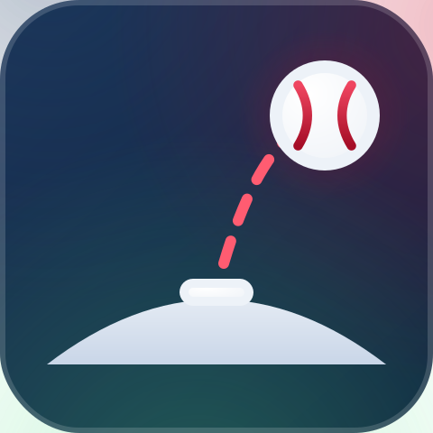

Mound Metrics AILast updated: July 2026
Mound Metrics AI uses an on-device pose-estimation model to estimate the position of a pitcher's joints from a single 2D camera angle, on frames you choose to mark. It compares the resulting angles and ratios to general reference ranges drawn from publicly available pitching biomechanics research.
That is fundamentally different from a clinical or biomechanics-lab assessment, which typically uses multiple synchronized cameras, markers or sensors placed directly on the body, and review by a trained professional. A single-camera video estimate can misjudge joint positions, especially at fast-moving points in the delivery, and cannot capture everything a trained eye or lab equipment would catch.
Arm and shoulder injuries in throwing athletes are serious, and mechanics are only one piece of the picture — workload, recovery, strength, and pitch counts all matter. If you or your athlete is dealing with pain, or you have real concerns about injury risk, talk to a sports medicine physician, physical therapist, or athletic trainer directly. Don't rely on this app, or any app, in place of that.
The app lets you select an age range to adjust reference values. This is a rough adjustment based on general developmental patterns, not a youth-pitching-specific clinical tool. Coaches and parents of young throwers should follow established pitch-count and rest guidelines (for example, from USA Baseball / MLB Pitch Smart) regardless of what this app shows.
This tool is provided "as is," without warranty of any kind, express or implied, including accuracy, fitness for a particular purpose, or reliability of the pose-detection AI. By using this app, you accept that its output is an estimate, may contain errors, and is used entirely at your own discretion and risk.
← Back to the app